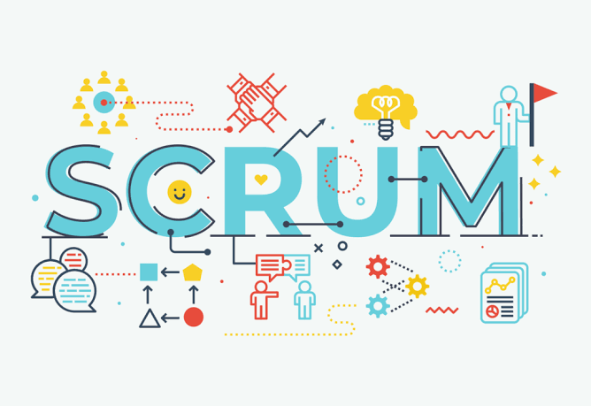
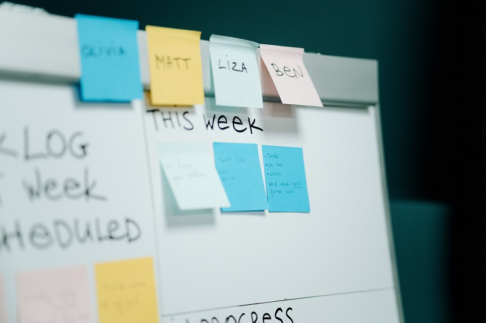

01
Planejamento
A equipe define o objetivo da Sprint e escolhe as tarefas que consegue realizar durante o ciclo.
O Scrum é um framework de trabalho ágil que organiza o desenvolvimento de projetos em ciclos curtos chamados Sprints. Em vez de esperar até o final para apresentar tudo, a equipe entrega partes do trabalho ao longo do projeto.
Uma Sprint geralmente dura de uma a quatro semanas, dependendo da organização da equipe e das necessidades do projeto.

A equipe define objetivos, desenvolve as atividades e avalia os resultados ao final de cada ciclo.
A equipe define o objetivo da Sprint e escolhe as tarefas que consegue realizar durante o ciclo.
É o período de trabalho em que a equipe desenvolve e testa uma parte do projeto.
Reunião diária de até 15 minutos para inspecionar o progresso e adaptar o plano de trabalho.
Ao final da Sprint, a equipe apresenta o resultado e identifica melhorias para os próximos ciclos.

O Scrum pode ser utilizado no desenvolvimento da lógica de um CLP ou na criação das telas de um sistema SCADA. A equipe pode planejar uma função, programá-la, testá-la e apresentar o resultado ao cliente ou operador.
Em vez de esperar meses para verificar o sistema completo, o cliente acompanha versões funcionais e pode sugerir mudanças durante o desenvolvimento.
As reuniões ajudam a identificar impedimentos, como falta de ferramentas, materiais ou informações necessárias para continuar o trabalho.
O Scrum favorece a colaboração, a adaptação a mudanças e a entrega progressiva de soluções, permitindo identificar problemas antes do fim do projeto.